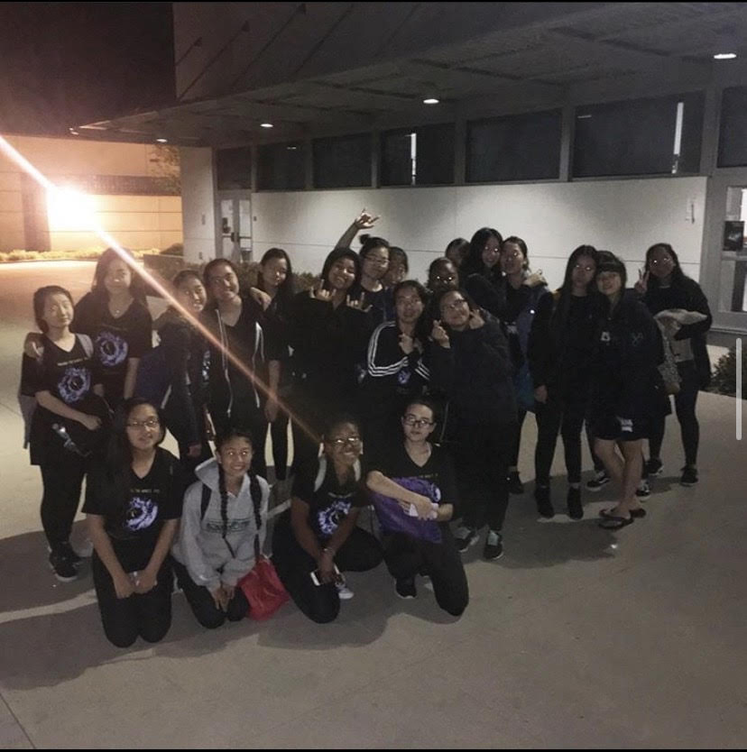

Yanchen Wu
I am currently a University of California - Riverside student. I am a freshman student majored in Economic / Administrative. Before college, I did not take a part in any job or volunteer related to Economic / Administrative. I am completely new to Economic / Administrative field so the only experiences I have are from my classes and everyday life. The first time that I true get to know economic is during my senior year in highschool. I took half semester of economic class in my high school. My teacher taught us some basic about supply and demand, let us do simulation projects on trading between different countries and showed us videos of The Shark Tank. She also let us played a virtual stock market game to help us to have a better understanding of the stock market. The stimulation projects and the virtual stock market game helped me to develop an interest in economic. This is the reason that made me chose my major.
During my first quarter of my first year in the university, I took the Introduction of Microeconomic course. We did a simulation on two different islands, which explained production possibility frontier. We also did other simulation on consumer’s behavior. I am very interested in economic so I tutored some of my classmates before the midterm and the final. We all did well on these two tests. During my second quarter of my first year in the university, I took Introduction to Business and Introduction to Computer Science courses. I am currently in my seventh week of the quarter. For my Introduction to Business class, we saw different examples of marketing strategies and promotions. I am excited to learn more about marketing. During my Introduction of Computer Science class, I learned how to create website using coding and did my first profile web page. I also learned how to use different Microsoft softwares such as Microsoft Words, Microsoft Excel, etc. These skills will all help me in the future when I encounter works related to economic and administrative study.
Before college, I did volunteer works that were not related to economic study or administrative study because I wasn’t introduced to economic and administrative study. I was in the Sports Medicine Team of my high school. I helped to treat some minor injuries of the athletes, such as ice bag, taping, wrapping, ice or hot bath therapy, injury prevention and rehab. I assisted the Athletic Trainer on field during the games to treat the injured athletes. My team also won first place of large school division is AACI National Sports Medicine Competition. I worked in Charleys Philly Steaks as register and helped with stock up the supplies and making the fries. I also volunteered in Orchesis Dance Company as a backstage staff. I had to set up the stage and the backstage. I also had to change the performers’ outfit and hair style during the thirty second gap of each show. I had to manage team work and learn how to deal with consumer or other people’s emotion and request during all of these works. Although these experiences are not directly related to economics or administrative but they will help me in the future.
Experience
Backstage Volunteer
• I helped with stage set up, such as floor, curtins and props
• I changed outfit for the performers during the gap of each shows
• I set up the backstage for the performers, which includes, dressing room, tables and chairs, mirrors and lights
• I styled the performers hair into different style matching their performance during the gap of each shows
• I helped with the cleaning up the stage and the backstage after every rehersal and performance
Register
• I was responsible for taking order and check out for the customers
• I was responsible for making drinks for the customers
• I was responsible for restocking for the restarunt during and after open hours
• I was responsible for frying and making different types of fries for the customers
• I was repnsible for cleaning up the restarunt during and after open hours
• I was responsible for dealing with the customers feedbacks and emotions
Student Athletic Trainer
• I dealed with minor injuries of the athletes, such as ice bags, wraping, taping, prevention work and rehab
• I helped on the field during games with the Athletic Trainer to help the athletes who were injured during the games
• My team, representing my school, won the first place of the large school division during the National AACI Sports Medicine Competition
• I helped to organize and clean up the athletic training room
Education
Univeristy of California - Riverside
Portfolio
